<html>
<head>
  <!-- Global site tag (gtag.js) - Google Analytics -->
  <script async src="https://www.googletagmanager.com/gtag/js?id=UA-154997136-1"></script>
  <script>
    window.dataLayer = window.dataLayer || [];
    function gtag(){dataLayer.push(arguments);}
    gtag('js', new Date());

    gtag('config', 'UA-154997136-1');
  </script>

<meta charset="UTF-8">
<title>Residency at Agastya Foundation</title>
  <link rel="stylesheet" type="text/css" href="res/style.css">
<link href="https://fonts.googleapis.com/css?family=Nunito&display=swap" rel="stylesheet">
  <link rel="icon" href="res/fav.png" type="image/gif" sizes="16x16">
  <meta name="viewport" content="width=device-width, initial-scale=1.0">
</head>


<body>

  <!-- menu bar standard -->
  <div class ="top">
      <a href="index.html"> </a>
      <h3 id = "home-button" > <a href="index.html" class="logo"> <b>Chandni Rajendran </b></a> </h3>
      <h3 id = "port-button"> <a href="portfolio.html"> portfolio </a></h3>
      <h3 id = "resume-button"> <a href="resume.html"> resume </a></h3>
      <h3 id = "about-button"> <a href="about.html">about </a> </h3>
  </div>

  <div class="content">
      <h3> Residency at Agastya Foundation</h3>
      <p>A few hours away from the big, noisy city of Bangalore, there's a small village of quiet curiosity, that sometimes gets quite loud with the voices of excited children as they explore life-size models and interactive science experiments. The drab drawings in their textbooks were coming alive and finally making sense in this campus. This is <a href="https://www.agastya.org/" target="_blank">Agastya Foundation</a>'s Kuppam Campus. <br>When I got the opportunity to do a short residency there upon Prof. Alka Hingorani's suggestion, I couldn't have foreseen how the environment would affect my creative process. </p>
      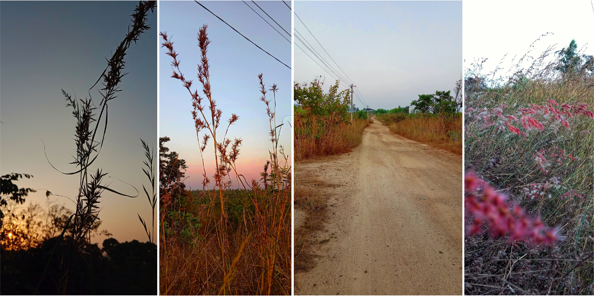
      <p>I was to spend two weeks here, but in a well-equipped innovation centre, and work on the following brief: <br> To humanise models, to make the experiences more memorable, relatable and easy to use.<br><br>
      After much pondering, I realised that the experiences were not quite like creating lesson plans. Designing exhibits at Agastya is a lot like blurb writing, or book-cover design. Picking the best quotes, reviews, and descriptions to put on the cover, to get even a passing reader hooked enough that they go back and read the whole book.
      <br> <br>The first few days, I spent simply assimiliating what Agastya was all about. Then I shortlisted a few topics, and zeroed in on optics. Targeting students of class 6-8, I designed a playful way to experience properties of light, in a tangible, hands on way.<br> <br>Videos of final design in use, followed by design process images below.</p>
      <iframe class="videos" src="https://www.youtube.com/embed/tqC4SdABSJ8 " frameborder="0" allow="accelerometer; autoplay; encrypted-media; gyroscope; picture-in-picture" allowfullscreen></iframe>
      <p>Turns out, sunlight is more fun than any artificial light source:</p>
      <iframe class="videos" src="https://www.youtube.com/embed/FbkmQandDrw" frameborder="0" allow="accelerometer; autoplay; encrypted-media; gyroscope; picture-in-picture" allowfullscreen></iframe>

      <p>If I could post-mortem break this down into essential components, it would be:<br>
      - a contained environment that can be manipulated, and the corelation and effects observeable,<br>
      - a clear goal or objective,<br>
      - the path to achieve the goal that involves manipulating parameters,<br>
      - the observation of effects lead to learning, <br>
      - opportunity to develop an intimate, comfortable understanding of the material's properties.<br>
      - materials being explored here: light, reflective surfaces, opaque material, scattering effect upon multiple reflections.<br>
      </p>
      <p>Scenes from the campus, and my workspace:</p>
      <div class="content-imageset">
        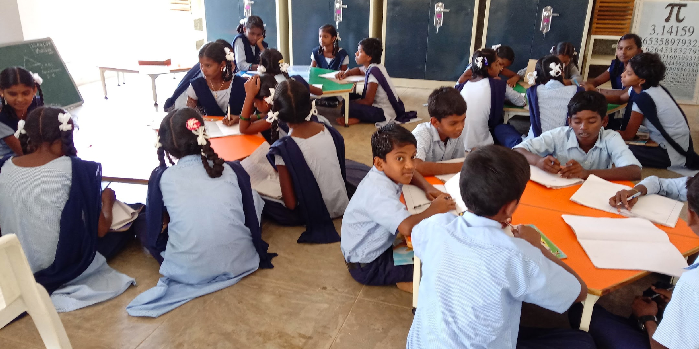
        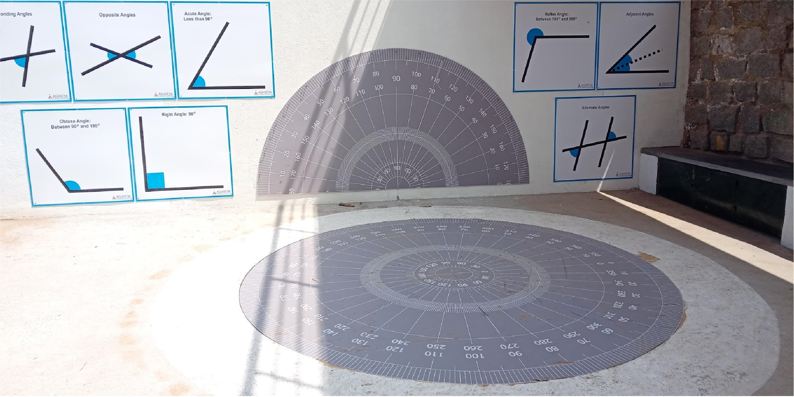
        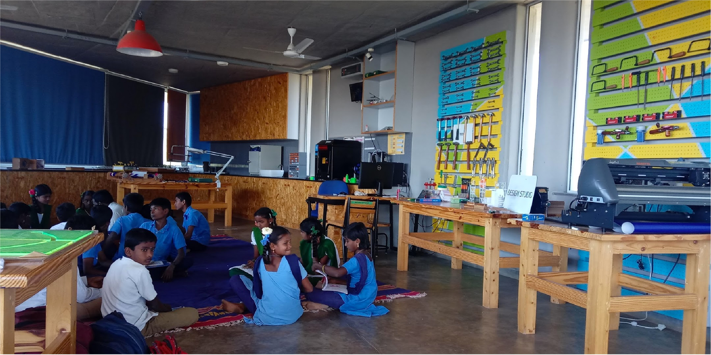
      </div>
      <p>There were many installations and equipment used in capus to familiarise students with perperties of light, this one used lenses to focus light on specific targets. It was a bit of a challenge because the targets weren't on the same level plane.</p>
      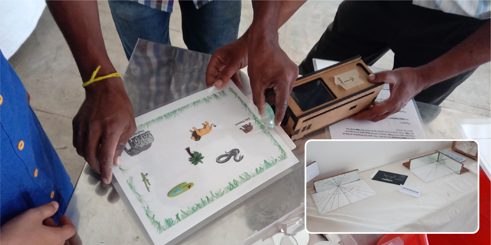
      <p>Sketching, writing: part of the design process.<br> Objective was to make this more fun, playful, memorable, relatable, or as the founder, Mr. Ramji Raghavan put it - more human.</p>
      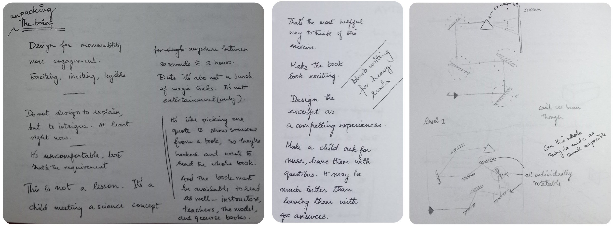
      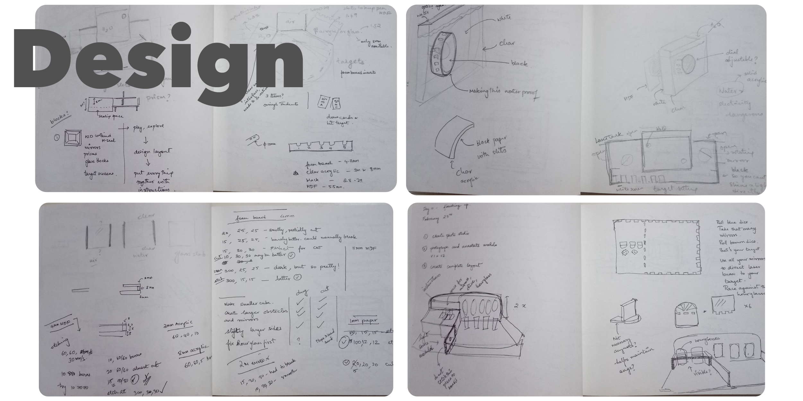
      <p>Modelling of the play space in sketchup.</p>
      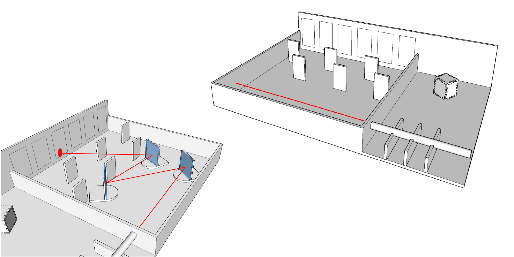
      <p>Luckily, the laser cutting machine was functional that week, and all the material i needed were available: MDF, mirror acrylic, a laser pen.  The only thing I couldn't find- sand for the hourlgass.</p>
      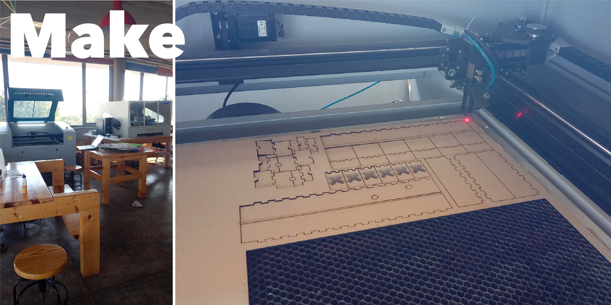
      <p>Setting up manipulatable mirrors that are stable, clear affordances to use well ro achieve the target.</p>
      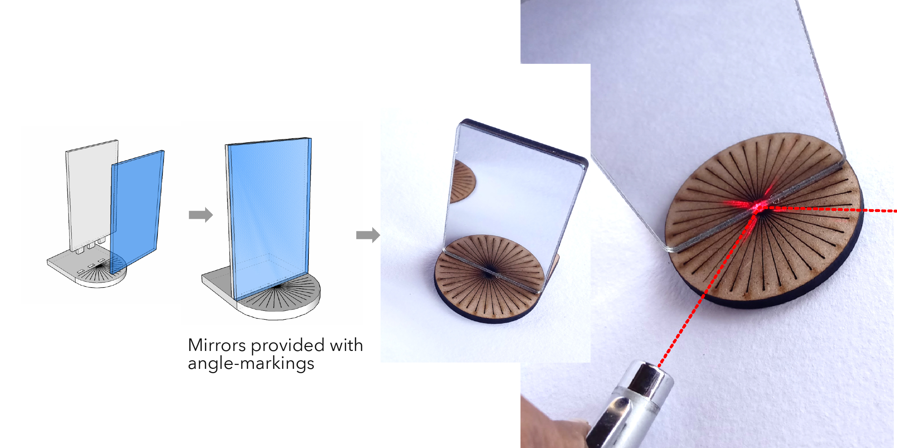
      <p>Clever hour glass timer, but no fine sand. No, clay or gravel don't work. #fail </p>
      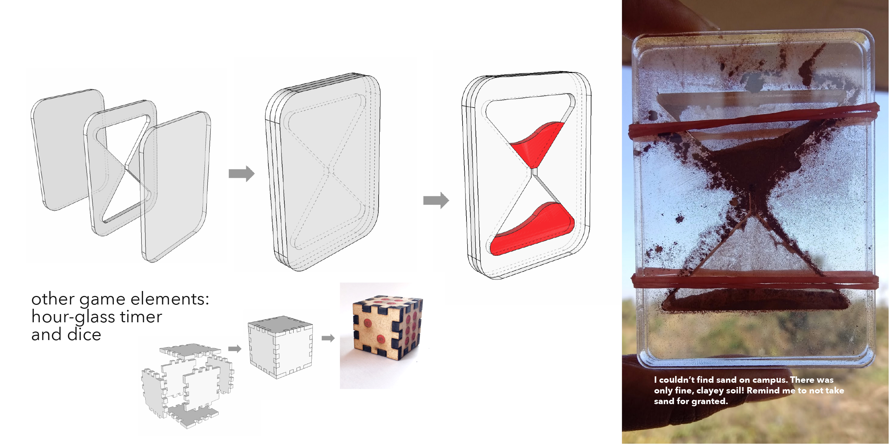
      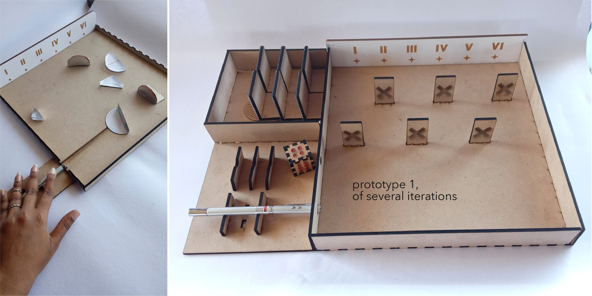
      <p>The game, objective and rules:</p>
      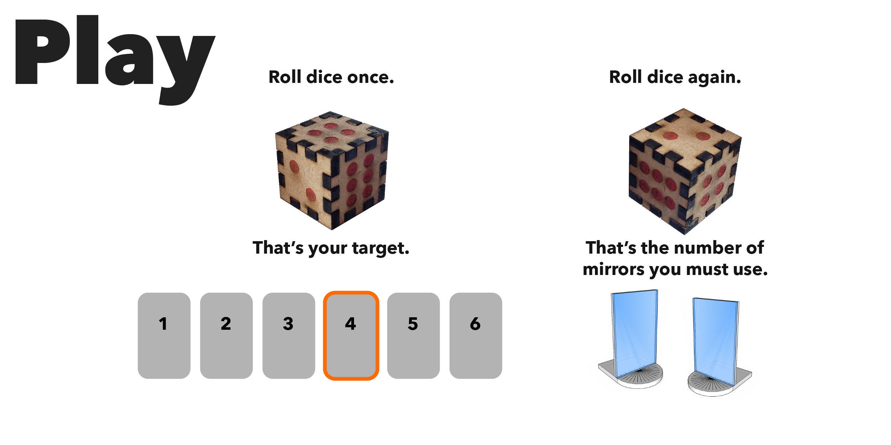
      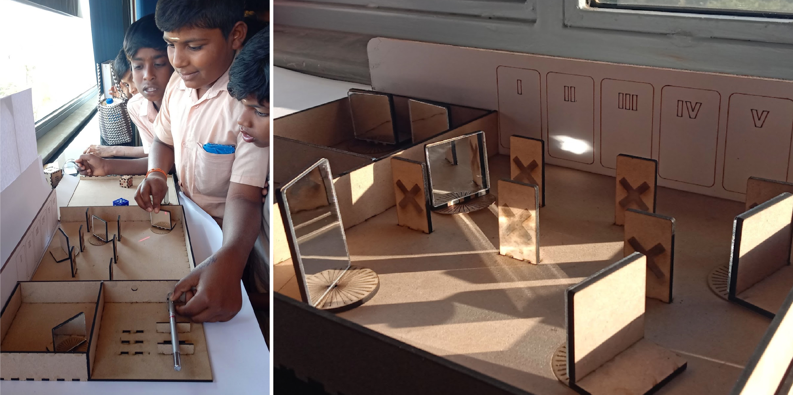
      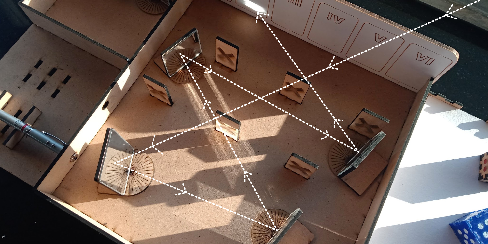

      <p>Two weeks well spent.</p>


  </div>


      <!-- footer -->
      <div class="footer">
        <div class = "footer-1">
          <p> <a href="portfolio.html"> portfolio </a> <br>
          <a href="talks.html"> talks</a><br>
          <a href="resume.html"> resume</a><br>
          <a href="about.html"> about</a> </p>

        </div>
        <div class = "footer-2">
          <p> <a href="portfolio.html"> LinkedIn </a> <br>
            <a> chandni@tuta.io </a>
          </p>
        </div>
        <div class = "footer-3">
          <p> Website developed from scratch, with joy.
          <br>  &copy; Chandni Rajendran</p>
        </div>
      </div>
      
</body>
</html>
